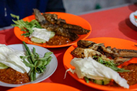

Pecel Lele :
- Deskripsi : Pecel lele atau pecek lele di Indonesia adalah nama sebuah makanan khas Jawa yang terdiri dari ikan lele dan sambal tomat. Biasanya yang dimaksud adalah ikan lele yang digoreng kering dengan minyak lalu disajikan dengan sambal tomat dan lalapan.
- Harga : Rp.15.000